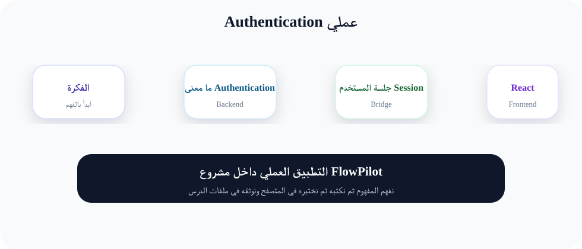
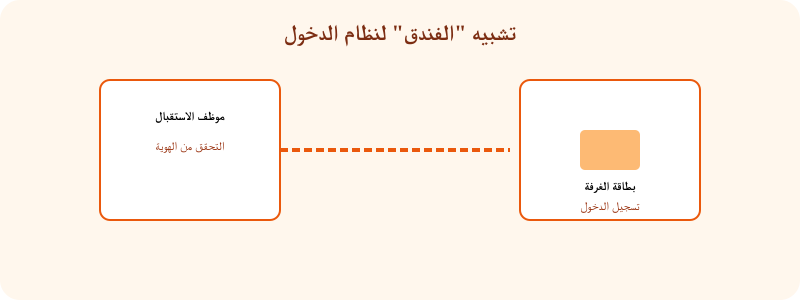

تسجيل الدخول وإنشاء حسابات المستخدمين
"المصادقة هي أول طبقة أمان في أي تطبيق. اليوم نتعلم كيف نجعل FlowPilot يعرف عملاءه قبل أن يفتح لهم الأبواب."
1. ما هي المصادقة (Authentication)؟
المصادقة (Authentication) هي عملية التحقق من هوية المستخدم. عندما تدخل إلى تطبيق ما وتكتب بريدك الإلكتروني وكلمة المرور، أنت تقوم بعملية "مصادقة". التطبيق يسأل: "هل أنت فعلاً من تدّعي أنك؟" والإجابة تكون من خلال البريد الإلكتروني وكلمة السر.
بدون المصادقة، يمكن لأي شخص في العالم أن يفتح التطبيق ويرى مشاريعك الخاصة في FlowPilot. تخيل أن أي شخص يمكنه حذف مهامك أو تغيير مواعيد تسليم مشاريعك فقط بكتابة الرابط في المتصفح. لهذا السبب، المصادقة هي أول وأهم خطوة في بناء تطبيق آمن.
📌 مصطلح مهم: Authentication ≠ Authorization
المصادقة (Authentication): تثبت هويتك (من أنت؟).
التفويض (Authorization): يحدد صلاحياتك (ماذا يُسمح لك أن تفعل؟).
في هذا الدرس نركز على المصادقة فقط. التفويض سنتعلمه في الدرس القادم.
2. ما هو Laravel Breeze؟
Laravel Breeze هو "starter kit" (مجموعة بداية) توفرها Laravel مجاناً. تحتوي هذه المجموعة على كل شيء يخص المصادقة: صفحات تسجيل الدخول، إنشاء حساب جديد، إعادة تعيين كلمة المرور، وتأكيد البريد الإلكتروني. كل هذه الصفحات مطبقة مسبقاً باستخدام React و Tailwind CSS.
لماذا نستخدم Breeze بدل كتابة كل شيء من الصفر؟ لأن كتابة نظام مصادقة آمن يحتاج لخبرة كبيرة في مجال الأمن السيبراني. Laravel Breeze مبني من قبل خبراء أمان ويحافظ على أفضل الممارسات (Best Practices). نحن كمطورين نريد بناء تطبيق FlowPilot، لا إعادة اختراع العجلة.
✓ تسجيل الدخول
Login page جاهزة مع React
✓ إنشاء حساب
Register page مع تحقق تلقائي
✓ استعادة كلمة المرور
Forgot Password + Reset
3. مثال من حياتنا: مفتاح الفندق
تخيل أنك تريد دخول فندق. هناك موظف استقبال (هذا هو نظام المصادقة).
الخطوة الأولى: تذهب لموظف الاستقبال وتقول له اسمك (هذا هو البريد الإلكتروني).
الخطوة الثانية: يطلب منك رقم حجزك (هذه هي كلمة المرور).
الخطوة الثالثة: بعد التأكد من صحة البيانات، يعطيك بطاقة الغرفة (هذه هي "الجلسة" أو Session).
ما بعد ذلك: طوال فترة إقامتك، كل ما تريد دخول الغرفة تظهر البطاقة (Session Cookie) والجهاز يفتح لك الباب بدون إعادة إدخال البيانات.
تماماً مثل هذا، بعد تسجيل الدخول في FlowPilot، المتصفح يحتفظ بـ "بطاقة دخول" (Cookie) تخبر Laravel أن هذا المستخدم موثوق. كلما طلب المستخدم صفحة جديدة، ترسل البطاقة مع الطلب ويمرّ دون الحاجة لتسجيل الدخول مرة أخرى.
4. مسارات المصادقة (Auth Routes)
بعد تثبيت Laravel Breeze، تظهر مجموعة من المسارات الجديدة في ملف routes/auth.php. دعنا نستعرضها معاً:
🔍 شرح الكود سطراً سطراً:
- Route::get('/login', ...): عندما يزور المستخدم الرابط
/loginفي المتصفح، يتم استدعاء الدالةcreateمنAuthenticatedSessionControllerالتي تعرض صفحة تسجيل الدخول (ملف React). - Route::post('/login', ...): عندما يضغط المستخدم على زر "تسجيل الدخول"، يرسل البيانات (البريد + كلمة المرور) عبر طلب POST إلى الدالة
storeالتي تتحقق من صحة البيانات. - ->middleware('guest'): هذا يعني أن الزوار فقط (غير المسجلين) يمكنهم رؤية هذه الصفحة. إذا كان المستخدم مسجلاً دخوله بالفعل، سينقل تلقائياً إلى لوحة التحكم.
- ->name('login'): يعطي اسم للمسار لتستخدمه في الروابط داخل التطبيق (مثلاً
route('login')). - Route::post('/logout', ...): طلب POST (عادةً عند الضغط على زر "تسجيل الخروج") ينفذ الدالة
destroyالتي تنهي الجلسة. - ->middleware('auth'): هذا يعني أن المستخدم يجب أن يكون مسجلاً للدخول ليتمكن من تسجيل الخروج (منطقي!).
5. نموذج User والميجراشن (User Model & Migration)
كل مستخدم في التطبيق يمثله سجل (Record) في جدول users في قاعدة البيانات. Laravel يوفر لنا نموذج User جاهزاً مع Migration (ملف تهجير) ينشئ الجدول تلقائياً.
🔍 شرح الكود:
- extends Authenticatable: هذه الفئة (Authenticatable) تحتوي على كل دوال المصادقة الجاهزة مثل
check()للتأكد من حالة الدخول، وlogin()لتسجيل الدخول. - $fillable: مصفوفة تحدد الحقول التي يمكن ملؤها عند إنشاء مستخدم جديد. هذا يحمي التطبيق من هجمات Mass Assignment.
- $hidden: مصفوفة تحدد الحقول التي لا تظهر عند تحويل المستخدم لـ JSON (مثلاً عند إرسال بيانات المستخدم لواجهة React).
6. Middleware للـ Auth
Middleware (البرمجية الوسيطة) هي "طبقة فحص" تقف بين طلب المستخدم وكود التطبيق. وظيفتها أن تفحص الطلب قبل وصوله إلى الـ Controller.
في Laravel، لدينا Middleware جاهز اسمه auth. كل ما عليك فعله هو إضافته للمسارات التي تريد حمايتها:
🔍 شرح الكود:
- middleware(['auth']): يخبر Laravel: "لا تسمح لأي شخص غير مسجل الدخول بالدخول إلى هذه المسارات". إذا حاول زائر الدخول، سينقل تلقائياً إلى صفحة تسجيل الدخول.
- ->group(function() {...}): يجمع عدة مسارات معاً لتطبيق نفس الـ Middleware عليها كلها.
- middleware(['guest']): العكس تماماً - يسمح فقط للزوار (غير المسجلين) برؤية الصفحة. مثلاً، لا نريد لمستخدم مسجل الدخول أن يرى صفحة تسجيل الدخول.
7. كيف يعالج Inertia حالة المصادقة؟
في تطبيق Inertia.js، بيانات المستخدم الحالي (المسجل دخوله) يتم مشاركتها مع كل صفحات React تلقائياً عبر Shared Data (بيانات مشتركة).
هذا يحدث في ملف HandleInertiaRequests.php وهو Middleware خاص بـ Inertia:
🔍 شرح الكود:
- share(Request $request): هذه الدالة تُستدعى في كل طلب. كل ما ترجعه من مصفوفة يصبح متاحاً في كل صفحات React عبر
usePage().props. - 'auth' => ['user' => $request->user()]: يخزن بيانات المستخدم الحالي في مفتاح
auth.user. إذا كان الزائر غير مسجل، تكون القيمةnull. - $request->session()->get('message'): يجلب أي رسالة مؤقتة (flash message) من الجلسة، مثل "تم تحديث الملف الشخصي بنجاح".
🖥️ كيف نستخدم auth.user في React؟
🔍 الشرح: usePage() هو Hook من Inertia يعطيك كل الـ Props المرسلة من Laravel. نستخدم props.auth.user للوصول لبيانات المستخدم. إذا كان null، نعرض زر "تسجيل الدخول". إذا كان موجوداً، نعرض اسم المستخدم.
8. FlowPilot: حماية المشاريع خلف المصادقة
في تطبيق FlowPilot، كل مستخدم يملك مشاريعه الخاصة. لا يمكن لأي شخص غير مسجل الدخول أن يرى حتى قائمة المشاريع. كيف نطبق هذا؟
🔑 بهذه الطريقة البسيطة، أي شخص غير مسجل يحاول فتح /dashboard أو /projects سيتم تحويله تلقائياً إلى صفحة تسجيل الدخول.
9. التطبيق العملي: 8 خطوات لتفعيل المصادقة
الخطوة 1: إنشاء مشروع Laravel جديد مع Breeze
نبدأ بإنشاء مشروع Laravel جديد وتثبيت Breeze:
🔍 composer create-project: ينشئ مشروع Laravel جديد باسم flowpilot. composer require --dev: يثبت Breeze كحزمة تطويرية (تستخدم أثناء التطوير فقط).
الخطوة 2: تثبيت Breeze مع React
الآن نثبت Breeze مع دعم React و Inertia:
🔍 بعد تشغيل الأمر، ستظهر رسالة تطلب منك اختيار بعض الخيارات. اختر الخيارات الافتراضية (اضغط Enter).
الخطوة 3: تثبيت وتشغيل NPM
نثبت مكتبات JavaScript (Vite, React, Tailwind) ونشغل خادم التطوير:
🔍 npm install: يقرأ ملف package.json ويحمل كل المكتبات المطلوبة. npm run dev: يشغل Vite (أداة بناء) في وضع التطوير - أي تغيير في ملفات JavaScript/React يتم تحميله فوراً.
الخطوة 4: إعداد قاعدة البيانات وتهجير الجداول
ننشئ قاعدة البيانات ونجهز الجداول (جدول users وغيره):
🔍 php artisan migrate: ينفذ جميع Migrations الموجودة في مجلد database/migrations. سينشئ جدول users (بأعمدة: id, name, email, password, remember_token, timestamps) وجدول password_reset_tokens وجدول sessions.
الخطوة 5: تجربة التسجيل (Register)
الآن نفتح التطبيق في المتصفح ونجرب إنشاء حساب جديد:
🔍 ستظهر صفحة التسجيل React. املأ الحقول: الاسم (مثلاً: أحمد)، البريد الإلكتروني (مثلاً: ahmed@example.com)، كلمة المرور (يجب أن تكون 8 أحرف على الأقل)، تأكيد كلمة المرور. اضغط "تسجيل". إذا نجحت العملية، سينقلك التطبيق إلى صفحة Dashboard.
الخطوة 6: تجربة تسجيل الدخول (Login)
بعد تسجيل الخروج، نختبر تسجيل الدخول:
🔍 في الواجهة الخلفية (Backend)، LoginController يقوم بالتحقق من البريد وكلمة المرور. إذا تطابقت البيانات، يقوم بإنشاء Session جديدة. إذا لم تطابق، يعيد المستخدم إلى صفحة الدخول مع رسالة خطأ.
الخطوة 7: حماية مسار Dashboard
نتأكد أن مسار Dashboard محمي ولا يمكن لزائر رؤيته:
🔍 إذا كنت تستخدم وضع Incognito (أو سجّلت الخروج)، محاولة فتح /dashboard ستنقلك تلقائياً إلى صفحة تسجيل الدخول. هذا هو عمل Middleware auth الذي تم تطبيقه على مسار Dashboard في ملف routes/web.php.
الخطوة 8: تخصيص واجهة تسجيل الدخول لـ FlowPilot
نقوم بتخصيص صفحة Login لتتناسب مع هوية FlowPilot البنفسجية:
🔍 افتح ملف resources/js/Pages/Auth/Login.jsx. ستجد مكون React الذي يعرض صفحة تسجيل الدخول. يمكنك تغيير النصوص من الإنجليزية إلى العربية وتعديل ألوان Tailwind لتتناسب مع الماركة البنفسجية لـ FlowPilot.
10. النتيجة المتوقعة بعد تنفيذ الخطوات
- ✅ صفحة
/registerتعرض استمارة إنشاء حساب جديدة (الاسم، البريد، كلمة المرور). - ✅ صفحة
/loginتعرض استمارة تسجيل الدخول (البريد، كلمة المرور). - ✅ بعد تسجيل الدخول، يظهر اسم المستخدم في شريط التنقل (Navbar).
- ✅ محاولة فتح
/dashboardبدون تسجيل الدخول تنقلك إلى صفحة تسجيل الدخول. - ✅ زر "تسجيل الخروج" يظهر فقط للمستخدمين المسجلين وينهي الجلسة.
11. الأخطاء الشائعة وحلولها
❌ الخطأ 1: "419 Page Expired" عند تسليم النموذج
السبب: عدم وجود @csrf في النموذج (Form). Laravel يحمي من هجمات CSRF ويتطلب توكن لكل طلب POST.
الحل: في Inertia، هذا يحدث تلقائياً. تأكد أنك تستخدم <form> مع method="post" وأضف useForm من Inertia.
❌ الخطأ 2: "SQLSTATE[HY000] [2002] Connection refused"
السبب: خادم MySQL (أو XAMPP/MAMP) لم يتم تشغيله بعد.
الحل: شغّل XAMPP Control Panel واضغط "Start" بجانب MySQL. أو شغّل خدمة MySQL من سطر الأوامر.
❌ الخطأ 3: "Class 'App\Http\Controllers\Auth\LoginController' not found"
السبب: لم يتم تثبيت Breeze بشكل صحيح أو لم يتم تحديث Composer autoload.
الحل: شغّل الأمر composer dump-autoload ثم أعد تثبيت Breeze بـ php artisan breeze:install react.
❌ الخطأ 4: صفحة بيضاء (White Screen) بعد التثبيت
السبب: عدم تشغيل npm run dev أو وجود خطأ في ملف React.
الحل: افتح Terminal وتأكد من تشغيل npm run dev. افحص Console في المتصفح (F12 > Console) لترى أخطاء JavaScript.
❌ الخطأ 5: "The password field confirmation does not match."
السبب: حقل "تأكيد كلمة المرور" لا يطابق حقل "كلمة المرور".
الحل: تأكد أن اسم حقل التأكيد هو password_confirmation في ملف React وأن قيمته تطابق password.
12. مخططات توضيحية

مخطط: دورة حياة المصادقة من البداية للنهاية

تشبيه بصري: المفتاح والفندق
13. 🧠 ملخص الدرس
🔹 المصادقة (Authentication) هي عملية التحقق من هوية المستخدم عبر البريد الإلكتروني وكلمة المرور.
🔹 Laravel Breeze هو Starter Kit يوفر نظام مصادقة كامل وجاهز مع React + Tailwind CSS.
🔹 مسارات المصادقة الرئيسية: /register (تسجيل)، /login (دخول)، /logout (خروج)، /forgot-password (نسيان كلمة المرور).
🔹 Middleware ('auth') يحمي المسارات من الزوار غير المسجلين.
🔹 Inertia.js يشارك بيانات المستخدم مع React عبر usePage().props.auth.user.
🔹 نموذج User يمثل المستخدم في قاعدة البيانات ويوفر دوال المصادقة الجاهزة.
🔹 في FlowPilot، كل مسارات المشاريع محمية بـ Middleware 'auth' لضمان أمان بيانات المستخدمين.
💡 تذكر: المصادقة هي الباب الأول لأمان تطبيقك. لا تبدأ ببناء أي ميزة قبل أن تؤمّن هذا الباب!